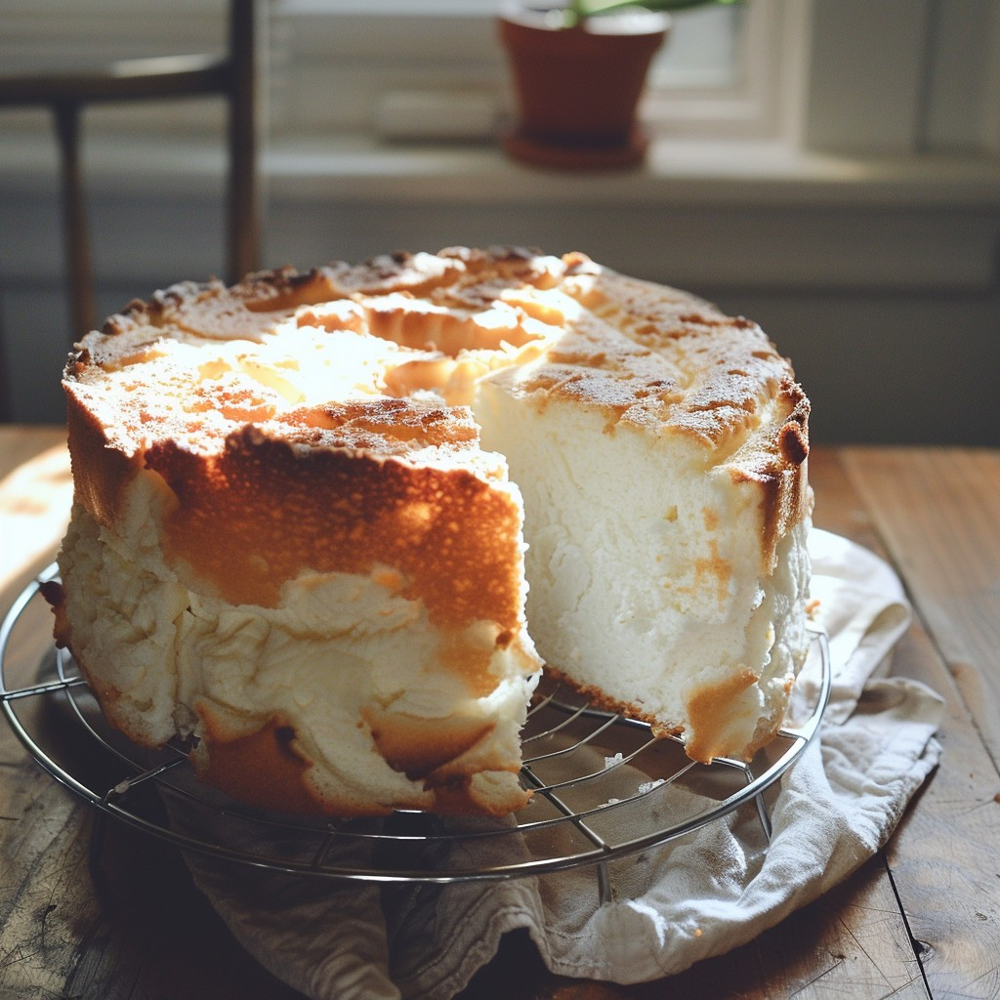

Back to Home
Angel Food Cake

Description
Angel food cake is a light, springy sponge cake made with egg
whites. It is low-fat and pairs well with berry compote and whipped
cream.
It also happens to be my wife's favorite dessert, so we eat it at
least once a year around my house.
Ingredients
- 1 cup cake flour
- 1 ½ cups white sugar, divided
- 12 egg whites
- 1 ½ teaspoons vanilla extract
- 1 ½ teaspoons cream of tartar
- ½ teaspoon salt
Directions
- Preheat the oven to 375 degrees F (190 degrees C). Clean and
fully dry a 10-inch tube pan.
- Sift together flour, and 3/4 cup sugar, set aside.
- Whip egg whites, along with vanilla, cream of tartar, and salt,
in a large bowl to medium stiff peaks. Gradually add remaining
3/4 cup sugar while continuing to whip to stiff peaks. When the
egg white mixture has reached its maximum volume, fold in the
sifted ingredients gradually, 1/3 at a time. Do not overmix.
Put the batter into the tube pan.
- Bake in the preheated oven until the cake springs back when
touched, 40 to 45 minutes.
- Balance the tube pan upside down on the top of a bottle to
prevent decompression while cooling. When cool, run a knife
around the edge of the pan and invert onto a plate.
Tips
Be sure that your 10-inch tube pan is clean and dry. Any amount of
oil or residue could deflate the egg whites.